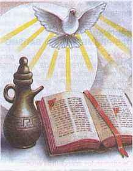
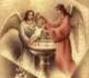
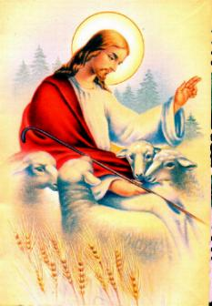

O Símbolo Batismal mais importante é a
“Água”.
No início do mundo o Espírito de Deus pairava sobre as águas, das quais emergem
a terra e todos os seres vivos. À semelhança do que aconteceu na criação, das
águas do Batismo santificadas pelo Espírito Santo emerge uma nova criatura.
A Mãe Igreja, pelas águas do Batismo, fecundadas pelo Espírito Santo, dá à luz
novos filhos. Jesus fala deste novo nascimento no diálogo com Nicodemos.
(Jo 3, 1-13)
A imagem do dilúvio e do Mar Vermelho confere outro significado à água do Batismo: a água destrói, mata, mas ao mesmo tempo é meio de salvação. Como as águas do dilúvio submergiram um mundo pecador, e como as águas do Mar Vermelho afogaram a cavalaria do Faraó que perseguia o povo que fugia da escravidão, assim também as águas batismais destroem o pecado, afogam o inimigo, exterminam e cancela o mal.
A destruição por sua vez é via para a libertação. No dilúvio foram poupados os justos; e das águas do Mar Vermelho saiu um povo livre e em festa. Da mesma forma, das águas do Batismo sai uma pessoa purificada das culpas, libertada da escravidão do pecado e do demônio (terá as tentações do maligno como todas as criaturas, mas não será escravo de satanás).
Assim, a “Água” é apenas um Símbolo, ela não tem a força e nem o poder de purificar o pecado. É o Espírito Santo que nela atua em todos os acontecimentos e no momento do Batismo, Ele, com a força e o poder Divino destrói todo o mal que existe e proporciona a alegria de uma nova vida.
“Sinal da Cruz”.
Após o diálogo introdutório em que os Pais pedem o Batismo para a criança, o sacerdote convida-lhes a traçarem o “Sinal da Cruz” na fronte da criança. Este gesto tem grande significação. Ele quer exprimir o primeiro encontro da criança com a fé em Jesus Cristo e na Salvação pela morte redentora do Senhor na Cruz. Porque foi pela morte Dele que nos reconciliamos com o Pai Eterno e fomos inseridos na amizade da Santíssima Trindade. O Sinal da Cruz relembra esta verdade histórica.
Assim, convidando os Pais a realizarem aquele gesto, o sacerdote está dizendo que a salvação de Deus vem à criança através da fé dos pais, pois eles, pelo Sacramento do Matrimônio, são constituídos mediadores entre Deus e o filho, exercendo a função sacerdotal. Os Pais receberam de Deus pela própria missão criadora e pela graça do Sacramento do Matrimônio, o poder de abençoar os filhos. Por isso, eles são convidados por Deus a adquirirem o costume de abençoarem os seus filhos enquanto pequenos e quando crescidos.
“Anúncio da Palavra de Deus”:
Ela ilumina com a verdade revelada os candidatos e a assembléia, suscitando uma resposta de fé. Como o Batismo significa libertação do pecado e do demônio, durante a celebração o celebrante pronuncia um ou vários exorcismos sobre o candidato.
“Unção com Óleo”.
Há dois ritos de Unção no Batismo. A primeira
“Unção” é feita antes
da “infusão da 
Este rito pode ser substituído por uma imposição das mãos do celebrante, sobre a
cabeça da criança, dizendo as palavras:
“O Cristo Salvador te dê Sua força”. É uma invocação ao
Espírito Santo para que o batizando renuncie ao mal e faça uma boa profissão de fé.
Na parte final do Batizado é feita a segunda “Unção com Óleo da Crisma”. No Antigo Testamento era comum ungir os sacerdotes, reis e profetas. Também Cristo foi ungido pelo Espírito Santo de um modo muito especial. Então esta Unção quer significar que pelo Batismo nos tornamos participantes do poder messiânico de Jesus. E também, conforme a primeira epístola de São Pedro (1 Pedr 2, 9-10) nos tornamos raça eleita com Cristo, reis (rainhas), sacerdotes (sacerdotisas) e profetas (profetisas).
Profetas, porque participantes da salvação em Cristo, que deveremos anunciar a humanidade por palavras e exemplos de vida. Mostrar que Deus é Amor através do verdadeiro amor pessoal. Tornamo-nos sacerdotes. Não possuímos o sacerdócio ministerial com o poder de fazer a Consagração na Santa Missa. Mas nos tornamos participantes do sacerdócio de Jesus, pois participamos do novo povo de Deus na Nova Aliança, sendo assim, parte de um povo sacerdotal capaz de oferecer sacrifícios com Cristo. Isto porque, recebemos nossa vida como precioso dom de Deus e assim, devemos oferecê-la em retribuição, em ação de graças ao Criador. Todo cristão pode e deve, em sua vida, orientar todas as coisas para Deus.
Por fim, pelo Batismo nos tornamos reis, possuidores do Reino de Deus. Com Jesus vencemos a morte e o pecado e podemos participar da própria vida de Deus.
“Veste Branca”.
Entre os gestos complementares do Batismo encontramos a entrega da veste branca. Este gesto tem sua origem no Batismo dos Adultos na Igreja primitiva. Ao chegarem à fonte, antes de descerem à água, as pessoas se despiam de suas vestes e eram ungidas. Após professarem sua fé e serem batizadas na piscina, saíam da água e eram revestidas de uma veste branca, simbolizando uma vida nova, despidos de seus pecados e paixões, tornando-se uma criatura nova em Cristo.
A veste branca ou a veste nova no Batismo quer expressar que pelo Sacramento entramos numa nova vida e esperamos levar esta nova vida até a participação do banquete celestial, onde o Senhor nos quer encontrar com a veste nupcial da amizade de Deus.
“A Vela Acesa”.
É um gesto muito significativo. Na cerimônia do Batizado, o celebrante convida os Pais a acenderem no Círio Pascal a vela da sua criança e ele reza a oração: “Pais e Padrinhos, esta luz vos é entregue para que a alimenteis. Por isso, esforçai-vos para que esta criança caminhe na vida iluminada por Cristo, como filho da luz. Perseverando na fé, possa com todos os santos ir ao encontro do Senhor, quando Ele vier. Recebei a luz de Cristo!”
Pelo Batismo somos iluminados, participamos da Luz que é Cristo. Não mais andamos nas trevas, pois somos filhos de Deus. A vela acesa pode significar também a nossa fé. Ela mantendo-se acesa mostra que não caminhamos nas trevas do inimigo.
Os Pais se tornam responsáveis para que a criança se torne luz para os outros em sua vida.
“Rito do Éfeta”.

É um rito facultativo, realizado logo após a entrega da vela acesa. É uma palavra aramaica que significa “abre-te”. O Celebrante toca os ouvidos e a boca da criança, dizendo: “O Senhor Jesus que fez os surdos ouvir e os mudos falar, te conceda que possas logo ouvir a sua palavra e professar a fé, para louvor e glória de Deus Pai”.
Pelo Batismo, o Senhor através do Espírito Santo, abre os ouvidos do batizando para que ouça e entenda a Palavra de Deus, solta a sua língua e lhe abre a boca para poder professar a sua fé. Os Pais são os instrumentos desta mensagem, que por sua mediação deverão fazê-la chegar às crianças. Na continuidade, os filhos atingindo o uso da razão poderão dizer: agora eu creio, porque eu mesmo conheço o Senhor Jesus Cristo.
“O Sal”.
Na vida das famílias o Sal tem duas grandes finalidades: “dar sabor” e “conservar” os alimentos. Como Símbolo religioso o Sal significa: “ser o tempero, ser o exemplo” que estimulará os irmãos a caminhar na estrada do direito, da justiça e do amor fraterno; “dando sabor” ao apetite humano, para ter fome da Palavra de Deus.
Todavia, o novo Rito do Batismo de Crianças aboliu o Rito do Sal. A razão principal foi por motivo higiênico.
Como derradeira notícia, no Catecismo da Igreja
Católica está escrito: “Jesus mesmo afirma
que o Batismo é necessário para a salvação”. Tanto é verdade
que Ele ordenou a seus Discípulos que anunciassem o Evangelho e batizassem todas
as nações conforme está escrito no Novo Testamento (Mt 28, 18-20)(Mc 16, 15-16)
(Lc 24, 46-47).
A Igreja não conhece outro meio senão o Batismo para garantir êxito aos que
querem entrar na bem-aventurança eterna.